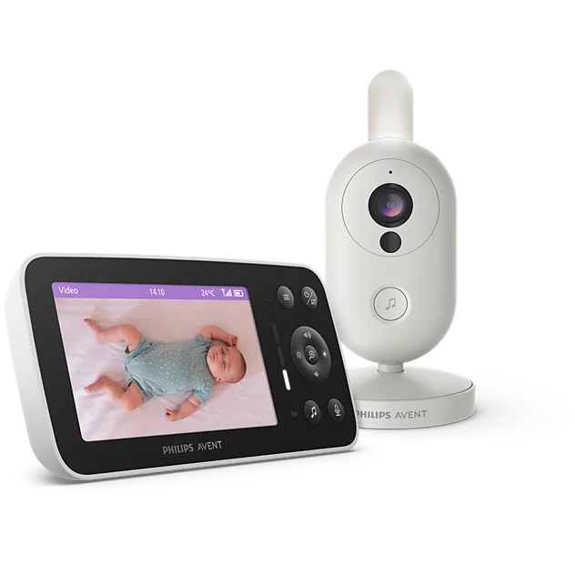

Philips Avent Video Baby Monitor
Ratings by platform
Displayed platform scores · shared pools counted onceVerified Philips refresh — 12 October, 14:13 HKT: The SCD871 review page confirms 33 shared reviews at 4.7/5. Mammamu is newly captured, bringing analysis to 43 texts (33 Philips + 10 cached Amazon). Amazon’s supplied review-portal link remains inaccessible. The user’s observation of 17 at 4.8 is recorded as unverified; no review text or stars have been invented.
Reviews
Top positive contributors
REVIEWSTop detractors
REVIEWSClick a theme to see the reviews counted. Each review counts once per theme and can mention several themes. These are mentions, not estimates of what caused the star rating. Quotes are short, exact excerpts; English translations are labelled separately.
Know what the evidence covers.
| Product | Amazon.de | Philips.de | bol.com |
|---|
A shared listing score does not establish separate SKU experience. “Not verified” means a matching listing has not been confirmed, not zero reviews.
How to read this dashboard
Scope. The supplied German and Dutch storefronts. Amazon's 10 global reviews include seven from Germany and three from France. The Philips pool is counted once.
Overall score. Today’s combined rating is unavailable because current Amazon/bol data and three Philips review stars cannot be verified. The overview retains the last verified 4.73/5 from 9 October: (29 × 5 + 11 × 4) ÷ 40 = 4.725. Analysis now covers 43 texts; unknown stars are excluded, never counted as zero. Amazon’s user-reported 17 at 4.8 is separate from the verified ledger and is not used to calculate a fresh combined score.
Review coding. Explicit positive and negative mentions, combining body text and pros/cons. The ledger covers selected themes, not an exhaustive sentiment classification. The battery theme includes adequate or good battery life, not only long duration. Two no-Wi-Fi mentions were removed after checking wording that only described no cloud upload or no phone use. Distinct review texts do not necessarily mean distinct purchasers.
Freshness. Retried 12 October 2026 at 14:13 HKT. The supplied Philips SCD871 #reviews page independently confirms 33 reviews and 4.7/5; the earlier extraction showed 32. Ten texts are readable in the new fetch, including newly captured Mammamu (posted 9 October), who praises image quality and ease and lists price as a drawback. Stars are not exposed. The load-more link returns the same review set. Amazon’s exact supplied portal link, simplified portal and product/review URLs failed through both web readers. Browser and shell startup also fail, preventing full expansion and local snapshot synchronization. No fresh bol check was performed in this retry. Monday compares with Friday: Philips 30 → 33 (+3 net reviews); star changes and Amazon changes remain unverified. Research is scheduled for 09:00 Asia/Hong_Kong, Monday–Friday, while this computer and Codex are running. Weekend chart dates are hidden; weekend reviews remain in the evidence.
Source links and coverage limitations
Amazon SCD861/26 and SCD863/26, and bol SCD863/26 remain unverified. The Philips shared pool cannot supply independent SCD861 or SCD863 consumer-experience conclusions.